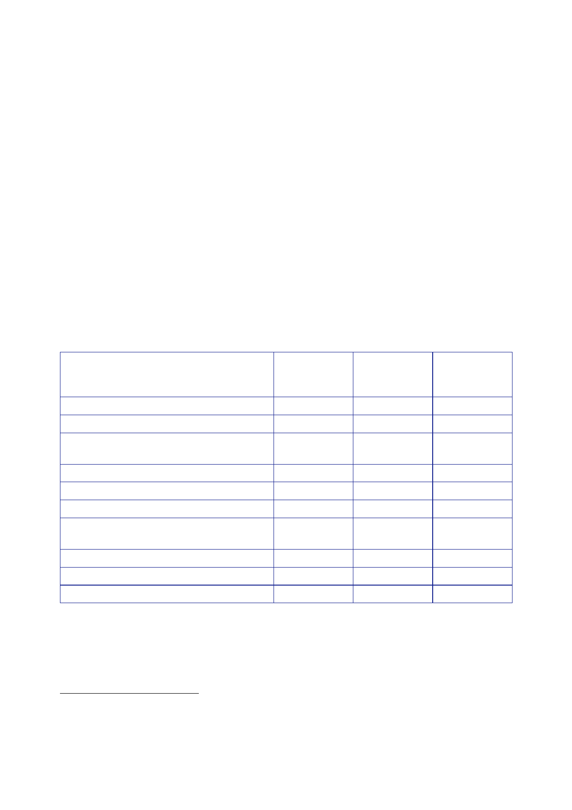

The Report
of the Iraq Inquiry
905.
The audit
stated that CPA officials believed their rosters were 90 to 95
percent
accurate,
which implied that there could be more than 100 individuals not
properly
accounted
for.
906.
The audit
found even less information about staff deployed outside
Baghdad:
“CPA
officials stated that if personnel departed Kuwait or other rear
area to a
forward
site, other than Baghdad, such as Al Hilla, Basra or Erbil, in
support of CPA
Operations
there were no reliable procedures to identify and account for
these
individuals.
Additionally, personnel hired to work directly for Iraq ministries
in Baghdad
provide
limited, if any, information to the CPA in Baghdad or Washington
DC.”
907.
A report to
Congress by the US General Accounting Office (GAO) in June
2004
stated that
the total number of CPA civilian and military personnel in Baghdad
peaked
at 1,239 in
April 2004 (see Table 5).594
That figure
was estimated to be about 90 percent
accurate,
reflecting the difficulty of tracking the arrival and departure of
personnel.
The GAO
stated that no reliable data were available for the period before 1
March 2004.
Temporary
US government employees
Non‑US
Coalition secondees
US
secondees excluding Department of
Defense
(DoD)
DoD
military
DoD
civilian
Contractors
Iraqi
expatriates from the Iraq Reconstruction
and
Development Council (IRDC)
Personnel
“in process”
Total
Total
excluding DoD military
595
Number
employed
237
160
Percentage
of
total
Percentage
of
total
excluding
DoD
military
19.1
27.5
12.9
18.6
208 16.8
24.1
377
30.4
–
81 6.5
9.4
73 5.9
8.5
27 2.2
3.1
76 6.1
8.8
1,239
100
–
862 –
100
908.
The GAO
reported that, although the total number of CPA staff fluctuated,
the
approximate
composition remained steady:
•
28 percent
from the US military;
594
US General
Accounting Office Report to Congressional Committees, June
2004, Rebuilding
Iraq.
Resource,
Security, Governance, Essential Services, and Oversight
Issues.
595
As listed
in the GAO report.
402